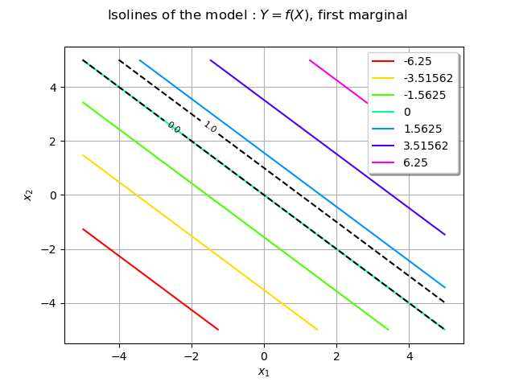
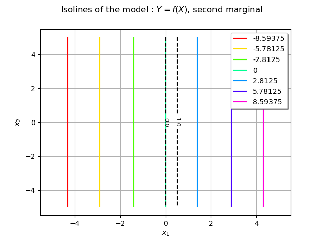
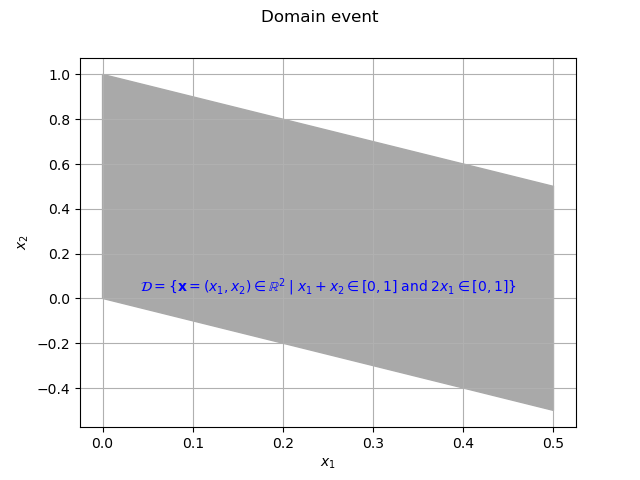
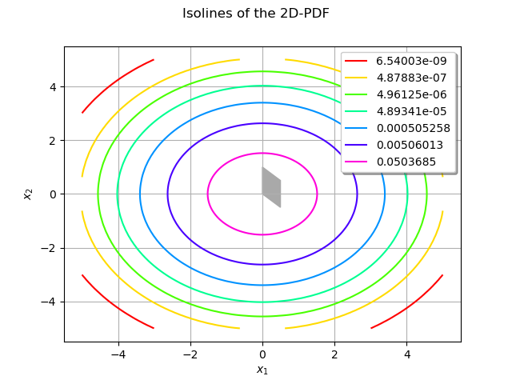
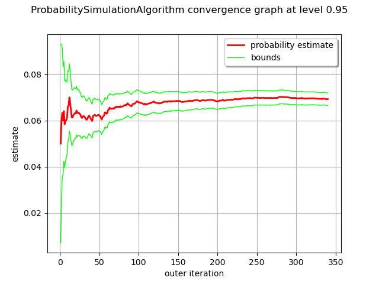

Note
Go to the end to download the full example code
Create a domain event¶
Abstract¶
We present in this example the creation and the use of a DomainEvent through a
simple Monte-Carlo estimator.
import openturns as ot
import openturns.viewer as otv
from matplotlib import pylab as plt
We consider a standard unit Gaussian bivariate random vector  with
independent marginals.
with
independent marginals.
dim = 2
distX = ot.Normal(dim)
We define a model  which maps a vector of
which maps a vector of  to another vector of
to another vector of
![f : (x_1, x_2) \mapsto (x_1 + x_2, 2x_1)]()
f = ot.SymbolicFunction(["x1", "x2"], ["x1+x2", "2*x1"])
We build a RandomVector out of the input distribution and
a CompositeRandomVector by using the model.
vecX = ot.RandomVector(distX)
vecY = ot.CompositeRandomVector(f, vecX)
Definition and vizualisation of a domain event¶
We define for each marginals of the output random vector vecY a domain of interest, say ![[0,1] \times [0,1]]()
domain = ot.Interval([0.0, 0.0], [1.0, 1.0])
The DomainEvent is then built from the output random vector vecY and the domain :
event = ot.DomainEvent(vecY, domain)
This domain is
![\mathcal{D} = \{ \vect{x}=(x_1, x_2) \in \mathbb{R}^2 \; | \; x_1+x_2 \in [0,1] \; \mathrm{and} \; 2x_1 \in [0,1] \}.]()
We plot both marginals of the model and the domain of interest for each marginal using contour curves.
We represent the first marginal of vecY.
ot.ResourceMap.SetAsUnsignedInteger("Contour-DefaultLevelsNumber", 7)
graphModel0 = f.draw(0, 1, 0, [0.0, 0.0], [-5.0, -5.0], [5.0, 5.0])
graphModel0.setXTitle(r"$x_1$")
graphModel0.setYTitle(r"$x_2$")
graphModel0.setTitle(r"Isolines of the model : $Y = f(X)$, first marginal")
We represent the second marginal of vecY.
graphModel1 = f.draw(0, 1, 1, [0.0, 0.0], [-5.0, -5.0], [5.0, 5.0])
graphModel1.setXTitle(r"$x_1$")
graphModel1.setYTitle(r"$x_2$")
graphModel1.setTitle(r"Isolines of the model : $Y = f(X)$, second marginal")
We shall now represent the curves delimiting the domain of interest :
nx, ny = 15, 15
xx = ot.Box([nx], ot.Interval([-5.0], [5.0])).generate()
yy = ot.Box([ny], ot.Interval([-5.0], [5.0])).generate()
inputData = ot.Box([nx, ny], ot.Interval([-5.0, -5.0], [5.0, 5.0])).generate()
outputData = f(inputData)
The contour line associated with the 0.0 value for the first marginal.
mycontour0 = ot.Contour(xx, yy, outputData.getMarginal(0), [0.0], ["0.0"])
mycontour0.setColor("black")
mycontour0.setLineStyle("dashed")
graphModel0.add(mycontour0)
The contour line associated with the 1.0 value for the first marginal.
mycontour1 = ot.Contour(xx, yy, outputData.getMarginal(0), [1.0], ["1.0"])
mycontour1.setColor("black")
mycontour1.setLineStyle("dashed")
graphModel0.add(mycontour1)
view = otv.View(graphModel0)

The contour line associated with the 0.0 value for the second marginal.
mycontour2 = ot.Contour(xx, yy, outputData.getMarginal(1), [0.0], ["0.0"])
mycontour2.setColor("black")
mycontour2.setLineStyle("dashed")
graphModel1.add(mycontour2)
The contour line associated with the 1.0 value for the second marginal.
mycontour3 = ot.Contour(xx, yy, outputData.getMarginal(1), [1.0], ["1.0"])
mycontour3.setColor("black")
mycontour3.setLineStyle("dashed")
graphModel1.add(mycontour3)
view = otv.View(graphModel1)

For each marginal the domain of interest is the area between the two black dashed curves.
The domain event  is the intersection of these two areas.
Here the intersection of both events is a parallelogram with the following
vertices :
is the intersection of these two areas.
Here the intersection of both events is a parallelogram with the following
vertices :
data = [[0.0, 0.0], [0.5, -0.5], [0.5, 0.5], [0.0, 1.0], [0.0, 0.0]]
We create a polygon from these vertices with the Polygon
class : that is our domain event.
myGraph = ot.Graph("Domain event", r"$x_1$", r"$x_2$", True, "", 1.0)
myPolygon = ot.Polygon(data)
myPolygon.setColor("darkgray")
myPolygon.setEdgeColor("darkgray")
myGraph.add(myPolygon)
# Some annotation
texts = [
r"$\mathcal{D} = \{ \mathbf{x}=(x_1, x_2) \in \mathbb{R}^2 \; | \; x_1+x_2 \in [0,1] \; \mathrm{and} \; 2x_1 \in [0,1] \}$"
]
myText = ot.Text([0.25], [0.0], texts)
myText.setTextSize(1)
myGraph.add(myText)
view = otv.View(myGraph)

An example¶
Consider the integral
![P_f = \int_{\mathcal{D}} \mathbf{1}_{\mathcal{D}}(\vect{x}) f_{X_1,X_2}(\vect{x}) d \vect{x}]()
where is the previous domain event,  is the indicator function on the domain
and
is the indicator function on the domain
and  is the probability density function of the input variable.
is the probability density function of the input variable.
We observe the integration domain superimposed on the 2D-PDF.
graphPDF = distX.drawPDF([-5.0, -5.0], [5.0, 5.0])
graphPDF.setXTitle(r"$x_1$")
graphPDF.setYTitle(r"$x_2$")
graphPDF.setTitle(r"Isolines of the 2D-PDF")
graphPDF.add(myPolygon)
view = otv.View(graphPDF)

We shall use a basic Monte Carlo algorithm using the domain event to estimate the probability.
algoMC = ot.ProbabilitySimulationAlgorithm(event)
algoMC.setMaximumOuterSampling(1000)
algoMC.setBlockSize(100)
algoMC.setMaximumCoefficientOfVariation(0.02)
algoMC.run()
print("Pf = %.4f" % algoMC.getResult().getProbabilityEstimate())
Pf = 0.0693
We draw the convergence history :
graphConvergence = algoMC.drawProbabilityConvergence()
view = otv.View(graphConvergence)

We can use the getSample() method of the event to estimate the probability  .
This method draws realizations of the underlying random input vector vecX and returns True if the corresponding output random vector is in the domain event.
Then the ratio between the number of realizations in the domain and the total of realizations is a rough estimate
of the probability which we compare with the previous Monte-Carlo estimator.
.
This method draws realizations of the underlying random input vector vecX and returns True if the corresponding output random vector is in the domain event.
Then the ratio between the number of realizations in the domain and the total of realizations is a rough estimate
of the probability which we compare with the previous Monte-Carlo estimator.
N = 30000
samples = event.getSample(N)
print("Basic estimator : %.4f" % (sum(samples)[0] / N))
Basic estimator : 0.0738
Display all figures
plt.show()
Reset default settings
ot.ResourceMap.Reload()